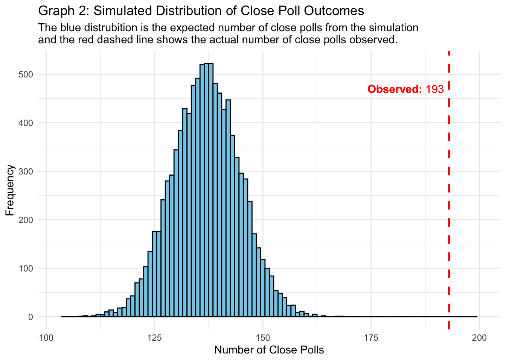
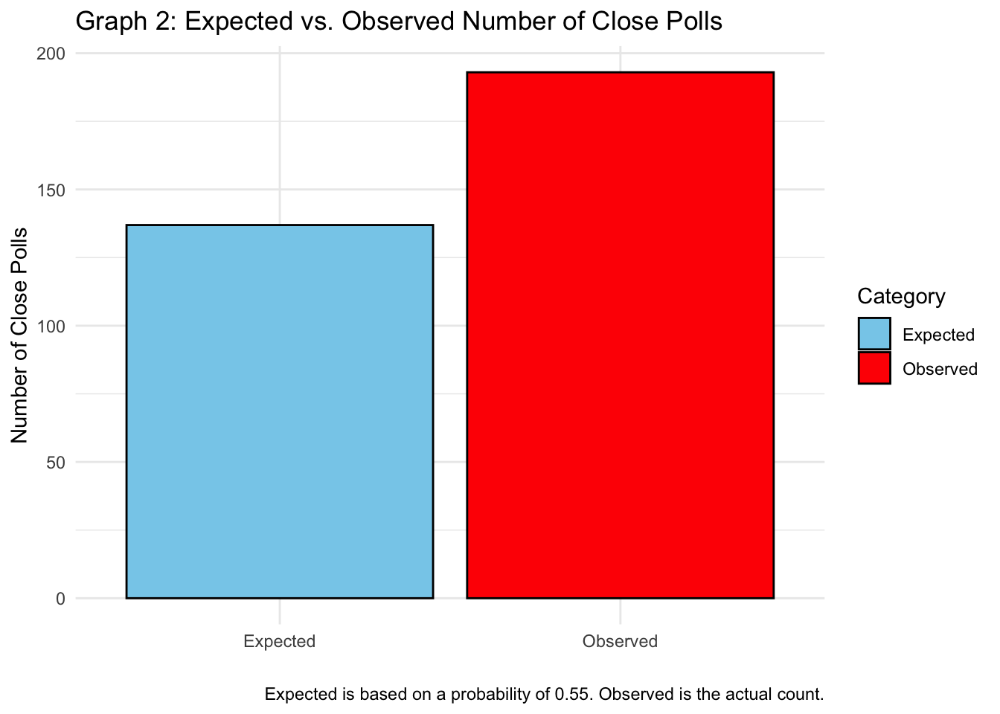
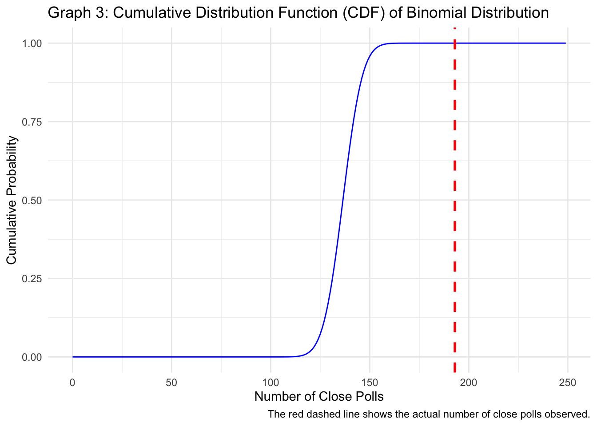

Analysis of Nate Silver’s Polling Outcomes: Observed vs. Expected Results
Goal:
Examine, analyze, and enhance Nate Silver’s paper on presidential polling and why the polls are wrong
Overview:
Nate Silver’s recent article (https://www.natesilver.net/p/theres-more-herding-in-swing-state) about polling inaccuracies caught my attention, especially his insights on how polling firms adjust weights in their models to create narratives of close races. He pointed out that there’s a staggering 1 in 9.5 trillion chance of so many polls showing such tight margins. Inspired by this, I decided to recreate his results using the same data and present some visually appealing graphs.
I used a binomial cumulative distribution function to calculate the probability of observing 193 or more close polls, assuming a null hypothesis of 0.55. The result? A jaw-dropping 1 in 8 trillion chance of seeing such close outcomes by random chance alone. This suggests there’s almost zero probability that these polls reflect the true state of the race, indicating that some results may be manipulated to appear closer than they are. This discrepancy raises serious questions about the reliability of polling outcomes.
To illustrate how misleading these polls can be, I created three graphs: Graph 1: A histogram showing simulated outcomes, with a red dashed line marking the observed success of 193 close polls. This emphasizes just how rare these results are. Graph 2: A bar chart comparing expected vs. observed close polls, highlighting the significant deviation from historical norms. Graph 3: A cumulative distribution function (CDF) plot that gives a broader perspective on the likelihood of various polling outcomes, further reinforcing the unusual nature of what we’re seeing.
These findings underline the importance of critically examining polling methods and understanding how weight adjustments can skew results. As we head into this election season, let’s stay aware of how these factors shape our perceptions and take all predictions with a grain of salt. Most importantly, go vote!
Introduction
In examining the polling data, we start with the foundational parameters that govern our analysis from Nate Silver’s paper: https://www.natesilver.net/p/theres-more-herding-in-swing-state. We have a total of 249 polls in the database, with an expected probability of a poll showing a close result under the null hypothesis set at 0.55. This probability is based on Nate Silver’s analysis, which indicates that, in a tied race, we would expect 55% of the polls to show results within ±2.5 points. This expectation arises from the margin of error formula and varies significantly depending on sample size but for a more in depth reasoning, check out his paper. In the data, the actual number of polls that showed a close result is 193 so 193/249 polls or 78% showed a close race.
Binomial Distribution
Using these parameters, we calculate the probability of observing 193 or more close polls under the null hypothesis. This is accomplished through the binomial cumulative distribution function (CDF):
Code
# Number of polls in the databasen<-249# Expected probability of a poll showing a close result under the null hypothesisp<-0.55# Number of polls that actually showed a close resultobserved_successes<-193# Calculate the probability using the binomial cumulative distribution functionprobability<-pbinom(observed_successes-1, n, p, lower.tail =FALSE)# Convert the probability into a "1 in X" numberone_in_x<-1/probability# Print the result without scientific notationformatted_one_in_x<-format(one_in_x, scientific =FALSE)paste("One in", formatted_one_in_x, "or about 8 trillion which is close to Nate Silver's 9 trillion probability")
[1] "One in 8316941692884 or about 8 trillion which is close to Nate Silver's 9 trillion probability"
The calculation indicates the rarity of observing such a result under the stated null hypothesis. This perspective aligns with Nate Silver’s approach to polling, where understanding the significance of results is crucial to interpreting their implications in real-world scenarios.
Visualizing Simulated Outcomes
To further illustrate the significance of our findings, we conduct 10,000 simulations to model the distribution of close poll outcomes. By creating a histogram of these simulated outcomes, we can visually assess where the observed success fits within the broader distribution. In Graph 1, the red dashed line signifies the number of observed close polls. This visual representation allows us to contextualize our findings within the realm of simulated expectations and see how rare it would be if the polls are correct.
Code
library(ggplot2)set.seed(123)simulations<-10000simulated_outcomes<-rbinom(simulations, n, p)# Create a histogram of simulated outcomesggplot(data.frame(simulated_outcomes), aes(x =simulated_outcomes))+geom_histogram(binwidth =1, fill ="skyblue", color ="black")+geom_vline(xintercept =observed_successes, color ="red", linetype ="dashed", size =1)+annotate("text", x =observed_successes-10, y =max(table(simulated_outcomes))*0.9, label =bquote(bold("Observed: ")*bold(.(observed_successes))), color ="red")+scale_x_continuous(limits =c(min(simulated_outcomes)-5,200))+# Expand x-axis rangelabs( title ="Graph 1: Simulated Distribution of Close Poll Outcomes", x ="Number of Close Polls", y ="Frequency", subtitle ="The blue distrubition is the expected number of close polls from the simulationand the red dashed line shows the actual number of close polls observed.")+theme_minimal()

Comparing Expected vs. Observed Outcomes
Next, we can create a bar chart, Graph 3, to compare the expected number of close polls against the observed number. The expected number is derived from the initial probability (0.55), while the observed number reflects real-world polling results. This comparison highlights the disparity between expected outcomes based on historical data and the actual observed results, providing insight into the polling landscape.
Code
# Calculate the expected number of close polls under the null hypothesisexpected_successes<-n*p# Create a data frame for plottingcomparison_data<-data.frame( Category =c("Expected", "Observed"), Count =c(expected_successes, observed_successes))# Plotggplot(comparison_data, aes(x =Category, y =Count, fill =Category))+geom_bar(stat ="identity", color ="black")+scale_fill_manual(values =c("skyblue", "red"))+labs( title ="Graph 2: Expected vs. Observed Number of Close Polls", y ="Number of Close Polls", x ="", caption ="Expected is based on a probability of 0.55. Observed is the actual count.")+theme_minimal()

Cumulative Distribution Function Analysis
Lastly, we can examine the cumulative distribution function (CDF) of the binomial distribution for further insights. The CDF plot provides a comprehensive view of the probability of observing various numbers of close polls, further emphasizing the significance of our observed results in relation to expectations.
Code
# Calculate the CDF for the binomial distributionx_vals<-0:ncdf_vals<-pbinom(x_vals, n, p)# Create a data frame for plottingcdf_data<-data.frame(x_vals, cdf_vals)# Plot the CDFggplot(cdf_data, aes(x =x_vals, y =cdf_vals))+geom_line(color ="blue")+geom_vline(xintercept =observed_successes, color ="red", linetype ="dashed", size =1)+labs( title ="Graph 3: Cumulative Distribution Function (CDF) of Binomial Distribution", x ="Number of Close Polls", y ="Cumulative Probability", caption ="The red dashed line shows the actual number of close polls observed.")+theme_minimal()

Conclusion
The analysis of polling data reveals a stark contrast between the expected outcomes based on Nate Silver’s framework and the actual results observed in recent polls. With an expected probability of p = 0.55, representing the likelihood that a poll should show a close result within ±2.5 points in a tied race, the finding of 193 close polls out of 249 conducted indicates a significant deviation from this norm. This discrepancy translates into an extraordinarily low probability, quantifying the actual observation as a 1 in 9 trillion scenario. Such results raise critical questions about the accuracy and reliability of the polling methodologies in use.
A noteworthy aspect of this analysis is the way polling firms often adjust weights in their models to achieve closer race outcomes. By calibrating the weights based on historical voting patterns and demographic data, pollsters can create an artificial tightness in the race. This practice might stem from a desire to generate more competitive narratives or to align with expected electoral dynamics, but it can inadvertently lead to inflated expectations for how close the race actually is.